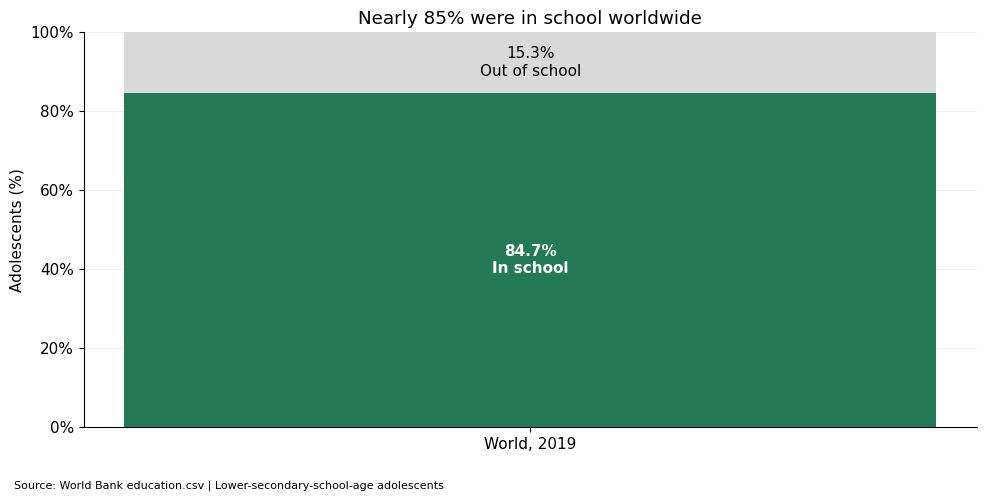
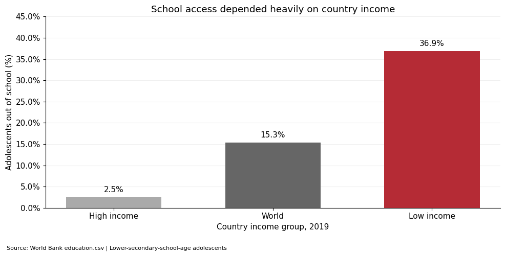

Project 2 · Persuasive or Deceptive Visualization?
How close were we to education for everyone?
Proposition
By 2019, access to secondary education was close to universal.
These two visualizations use the same World Bank education indicator but emphasize different parts of the story. The first focuses on the worldwide majority in school. The second focuses on the gap between income groups.
About the measure: The indicator is “Adolescents out of school (% of lower secondary school age).” I calculate the in-school share as 100 minus the out-of-school percentage. Being in school does not establish enrollment specifically in secondary education, attendance, completion, or learning quality. This is a limitation of using this measure to evaluate my proposition.
FOR the proposition
Most adolescents were already in school

Design Decisions and Rationale
- Calculated field: I subtract the out-of-school rate from 100. This presents the same information through participation, which makes the result feel more positive.
- Part-to-whole encoding: A stacked bar uses a full 0–100% scale to show how much of the population was in school. The large lower section makes the majority easy to see while keeping the excluded share visible.
- Color and labels: Green highlights participation, while gray gives less emphasis to adolescents out of school. Labels inside both sections show the percentages directly and avoid making readers estimate them.
- Global aggregation: I use the dataset’s World aggregate rather than averaging country percentages. This gives one clear worldwide summary, but it hides differences between income groups.
- Persuasive framing: “Nearly 85%” emphasizes the majority. Interpreting that share as “close to universal” is subjective: about 15% were still excluded. The chart supports the proposition through framing, rather than proving it.
AGAINST the proposition
A global average hides unequal access

Design Decisions and Rationale
- Comparison by position and length: The bars share a zero baseline, so their heights make the differences easy to compare. Ordering high income, World, and low income creates a clear progression toward the largest excluded share.
- Negative framing: I show the out-of-school percentage instead of its complement. This focuses attention on who was left out and challenges the idea of universal access.
- Color emphasis: Red draws attention to the low-income group. Gray keeps the high-income group and worldwide reference visible without competing with the main point.
- Scale and annotation: The vertical axis runs from 0 to 45%, giving the differences more visual space than the first chart’s 0–100% scale. Direct percentage labels keep the values explicit. Readers should compare the labeled rates rather than bar heights across the two charts.
- Selection and derived comparison: I filter to 2019 and select the highest and lowest income groups, with World as a reference. Subtracting 2.5 from 36.9 gives an approximately 34.4-percentage-point gap using rounded values. Choosing the extremes emphasizes inequality and leaves out middle-income groups. World overlaps with the income categories; the three bars are not additive.
Final Reflection
Working with the same data showed me how much presentation can change the message. In the first chart, the large green section makes school participation look widespread. In the second chart, the red bar makes it clear that many adolescents in low-income countries were still out of school. Neither chart changes the underlying percentages, but each directs attention to a different part of the data.
I find the argument against the proposition more convincing. A global participation rate of about 84.7% is a large majority, but it still leaves about 15.3% out of school. The low-income rate of about 36.9% makes the phrase “close to universal” harder to defend. I also cannot use this indicator alone to claim that adolescents had access specifically to secondary education, since it measures whether adolescents of a particular age were out of school.
For me, persuasion becomes misleading when a chart encourages a conclusion that its data cannot support, or hides information that would change the reader’s interpretation. Positive colors, selected groups, and different scales can all influence the story without changing any numbers. Explaining those choices, keeping the excluded share visible, and identifying the measure’s limitations help readers judge the argument for themselves. A fuller account would include middle-income groups and trends over time.
Data and Methods
Source: World Bank Indicators course dataset, education.csv. Both visualizations use the 2019 observations already plotted in my checkpoint notebook. Income groups and World are existing aggregate rows in the dataset; I do not recompute them from country-level rates. Percentages are rounded to one decimal place.
Download the checkpoint notebook and chart code · World Bank indicator reference